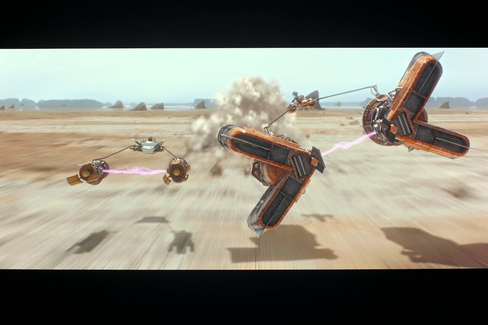
Tatooine
A desert planet located in the Outer Rim. Tatooine is known for its twin suns, moisture farms, and podracing.
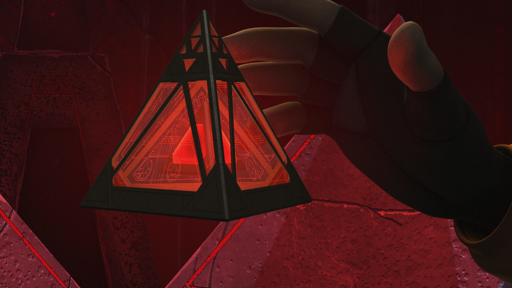
Planetary Archive
From desert worlds to city-covered planets, the Star Wars galaxy contains a wide variety of environments and cultures.

A desert planet located in the Outer Rim. Tatooine is known for its twin suns, moisture farms, and podracing.
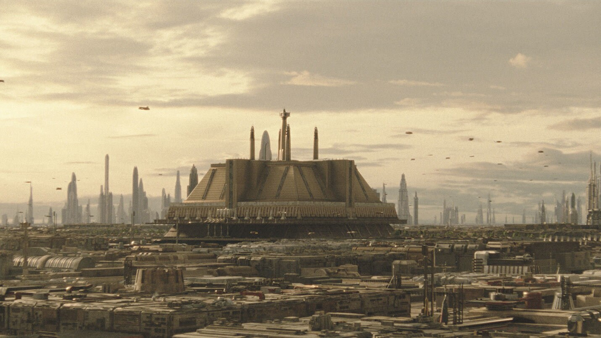
A massive city-covered planet that served as the center of the Galactic Republic and later the Galactic Empire.
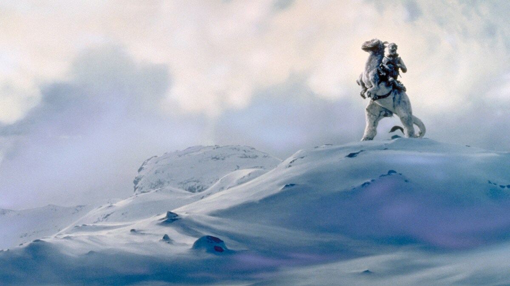
A frozen world that became the location of the Rebel Alliance's Echo Base during the Galactic Civil War.
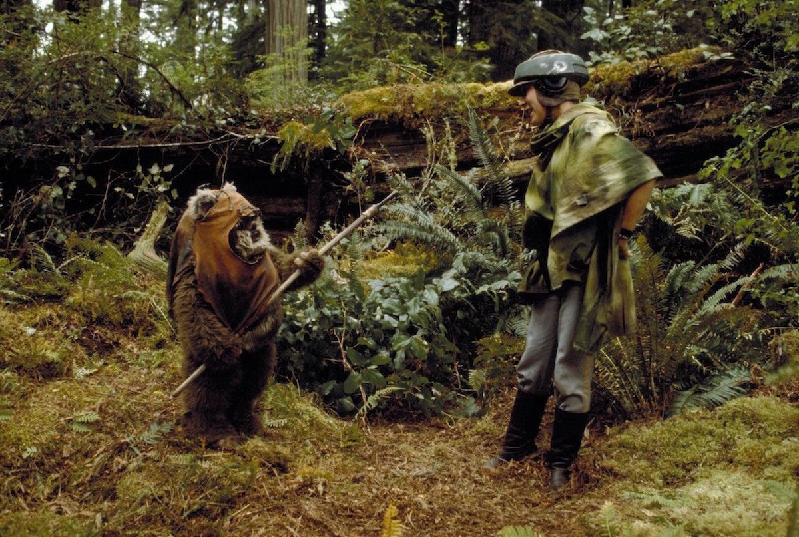
A forest moon inhabited by the Ewoks and the location of the second Death Star's final battle.
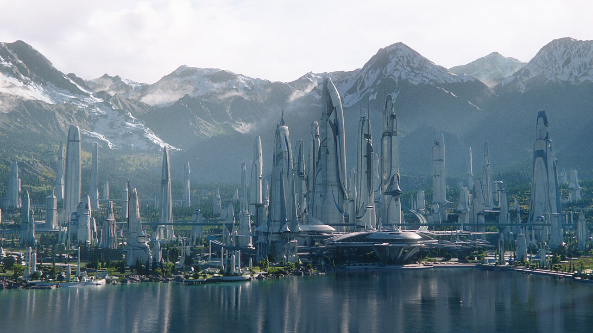
A peaceful world (formerly) known for its natural beauty, strong culture, and connection to the Alderaan Royal Family.
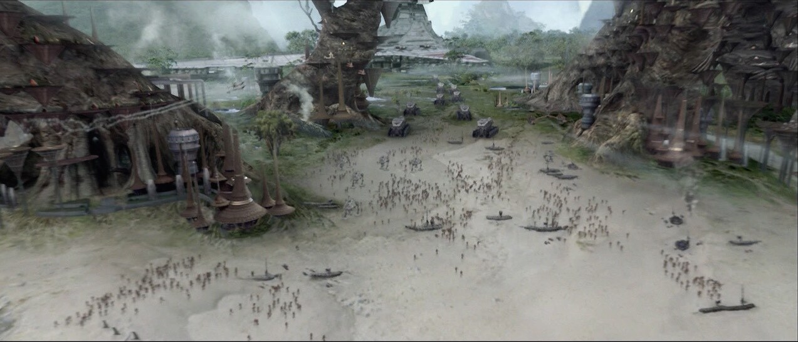
The forest homeworld of the Wookiees, filled with massive trees, oceans, and dangerous wildlife.
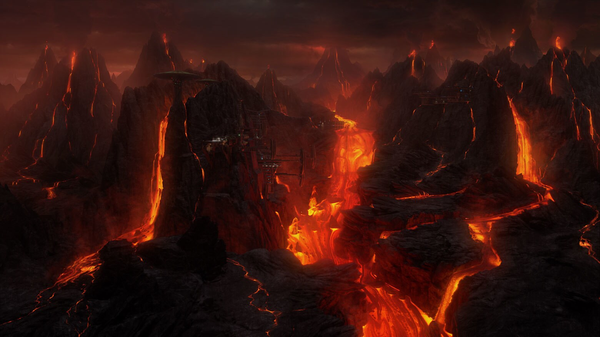
A volcanic world strongly connected to the Sith and the final confrontation between Obi-Wan Kenobi and Anakin Skywalker.
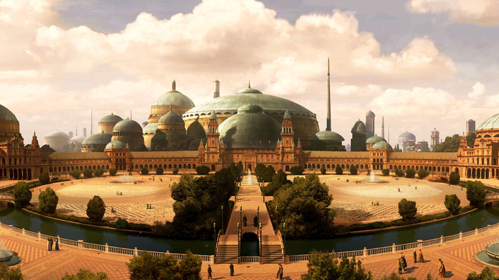
The homeworld of Padmé Amidala and Sheev Palpatine, known for its beautiful landscapes, lakes, and Gungan cities.
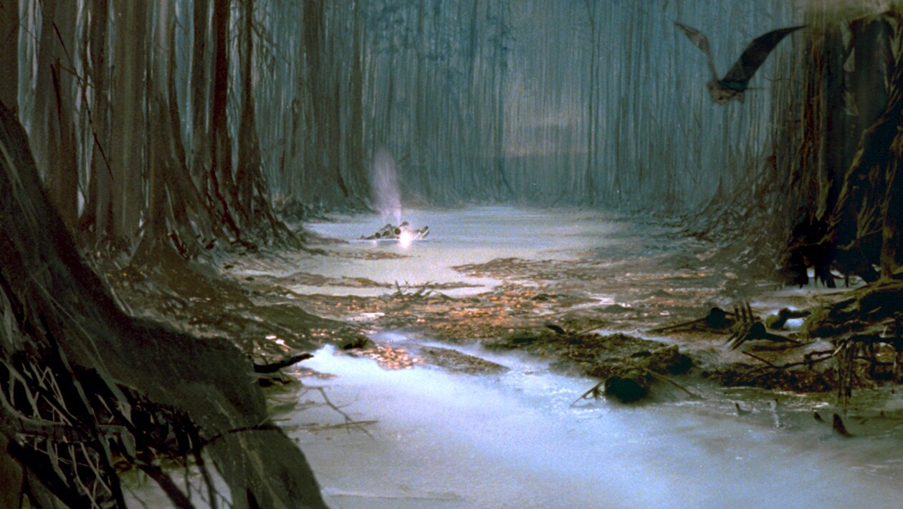
A remote swamp planet where Yoda lived in exile and trained Luke Skywalker in the ways of the Force.
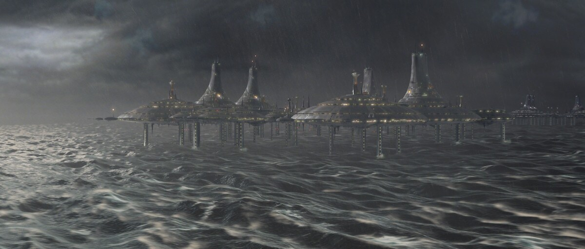
An ocean-covered planet where the Kaminoans created the clone army for the Galactic Republic.
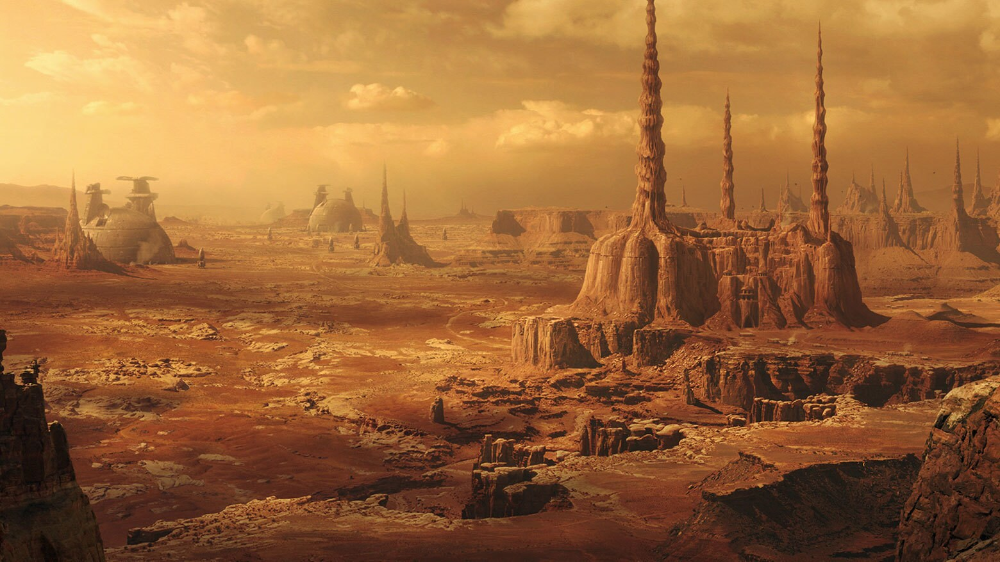
A rocky planet associated with the Separatist Alliance, droid factories, and the beginning of the Clone Wars.
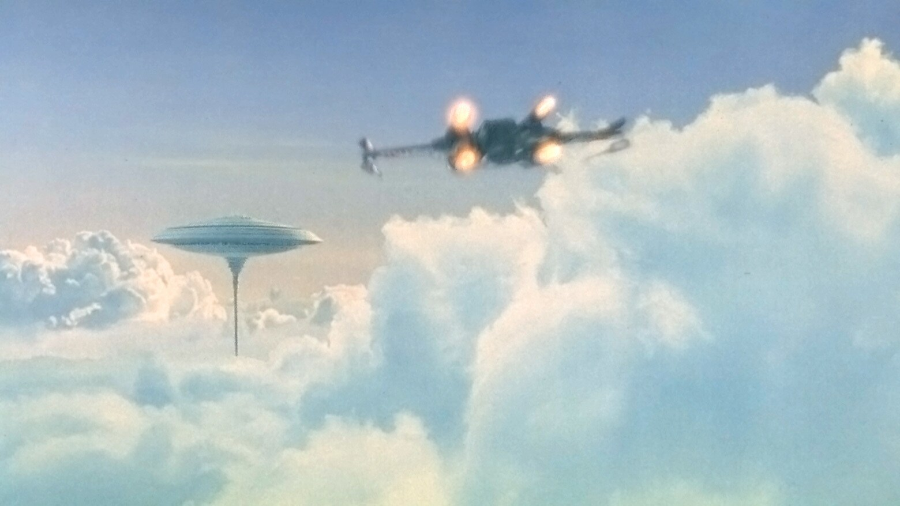
A gas giant known for Cloud City, Tibanna gas mining, and the confrontation between Luke Skywalker and Darth Vader.